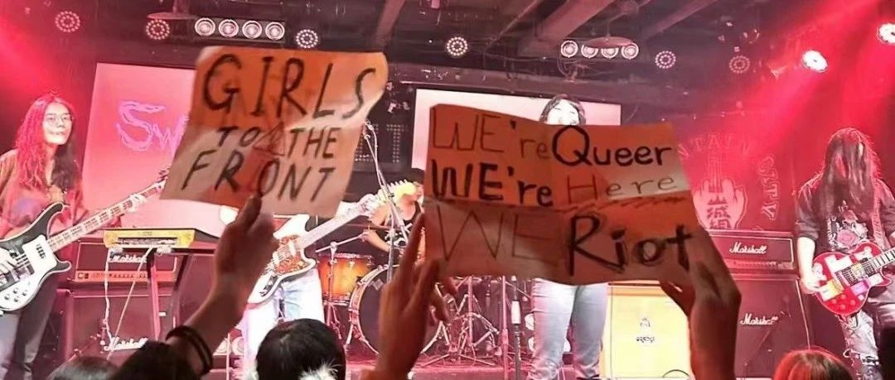

为什么圈子总是孤立幸存者？｜6.16暴女聚会｜圆桌&放映&暴女DJ set
成都市成华西街299号附72号负一楼
The Who 没有既定
幸存者并没有做错什么，却为什么总是受到来自圈子/社群的二次伤害？
周围人缺乏对伤害的重视，或是没有做出实际行动来应对伤害，是如何让幸存者的内在生命力慢慢衰竭的？
我们可以怎样建立一个重视暴力、能对暴力做出合适处理，并能支持幸存者的社群？
②暴女纪录片
③最后，
严禁性骚扰，与ta人互动前请获取对方的同意；
严禁一切恐同、恐跨、恐双、性别歧视、身体歧视、种族歧视等言论与行为；
请勿假定周围人的性别和性向，交流时可以询问对方的称谓或使用无性别称谓（朋友、伙伴等）；
如果你在活动上感到遭遇了骚扰或歧视，可以找组织者/DJ寻求帮助。
在讨论环节中，请尽量围绕主题进行分享，一次发言尽量不超过五分钟，在活动过程中烦请注意身边参与者的体验度~避免出现单一话题主导者和部分参与的朋友被边缘化的情况哦(*'·ω·)(·ω·`*)♡